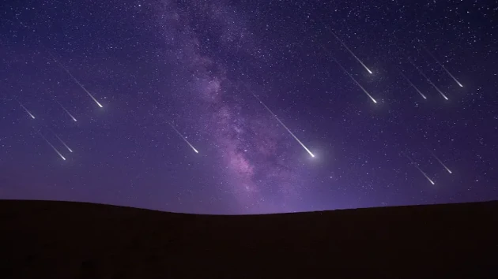

Sistema Solar
O Sistema Solar é um conjunto de corpos celestes que gravitam na órbita de um sol (uma estrela). O nosso sistema solar é formado por 8 planetas: Mercúrio, Vênus, Terra, Marte, Júpiter, Saturno, Urano e Netuno.
Além deles, existem mais cinco planetas anões (Ceres, Plutão, Haumea, Makemake, Éris) e muitos outros astros, como satélites naturais, asteroides, meteoros, meteoroides e cometas. O Sol e todo o nosso sistema solar faz parte de uma galáxia, que se chama Via-Láctea.
Formação do Sistema Solar
Algumas teorias tentam explicar a origem do Sistema Solar sendo uma delas a hipótese nebular. Segundo ela, no início, as estrelas teriam sido nebulosas, ou seja, grandes nuvens de poeira e gás que se compactaram girando cada vez mais rápido devido a sua força gravitacional. Sendo assim, há 4,5 bilhões de anos, sua porção central teria formado uma estrela, e a matéria exterior se contraiu por algum tipo de perturbação, dando origem aos planetas.
Características do Sistema Solar
Inicialmente, é preciso saber que o Sol é uma estrela. Essa estrela possui 99,8% de toda a massa do sistema solar e, segundo a lei da gravitação universal de Newton, massa atrai massa.
Assim, o Sol atrai tudo o que existe a sua volta e aprisiona uma série de astros e corpos celestes em sua órbita, formando o que chamamos de sistema solar.
O meio interplanetário é o espaço existente entre os componentes do sistema solar constituído de poeira, que são partículas microscópicas no estado sólido, e gás, uma mistura de fluxo gasoso e partículas carregadas eletricamente.
Planetas do Sistema Solar
Os planetas são astros sem luz nem calor próprio. No nosso sistema solar são conhecidos oito planetas que de acordo com a proximidade do Sol estão representados na imagem a seguir.
Os planetas que compõem o sistema solar são classificados em terrestres e jovianos.
Mercúrio, Vênus, Terra e Marte são planetas terrestres, pois rochas e metais pesados são abundantes em suas composições, além de possuírem menor massa, tamanho e estarem mais próximos do Sol.
Júpiter, Saturno, Urano e Netuno são planetas jovianos ou gasosos, formados por componentes leves, como hidrogênio, hélio, metano e amônia. Ao contrário dos planetas terrestres, eles estão mais distantes do Sol, possuem maior massa e tamanho.
| Corpo | Diâmetro (Km) | Distância média do Sol (Km) |
|---|---|---|
| Sol | 1 391 000 | 0 |
| Mercúrio | 4 880 | 57 910 000 |
| Vênus | 12 104 | 108 200 000 |
| Terra | 12 756 | 149 600 000 |
| Marte | 6 794 | 227 940 000 |
| Júpiter | 142 984 | 778 330 000 |
| Saturno | 120 536 | 1 429 400 000 |
| Urano | 51 118 | 2 870 990 000 |
| Netuno | 49 532 | 4 504 000 000 |
Quais são os astros do Sistema Solar ?
O Sistema Solar não é formado somente por planetas, planetas anões e satélites, mas também por um conjunto de asteroides, cometas e meteoroides. As características desses corpos celestes estão citadas abaixo:

Curiosidades sobre o Sistema Solar